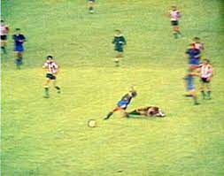
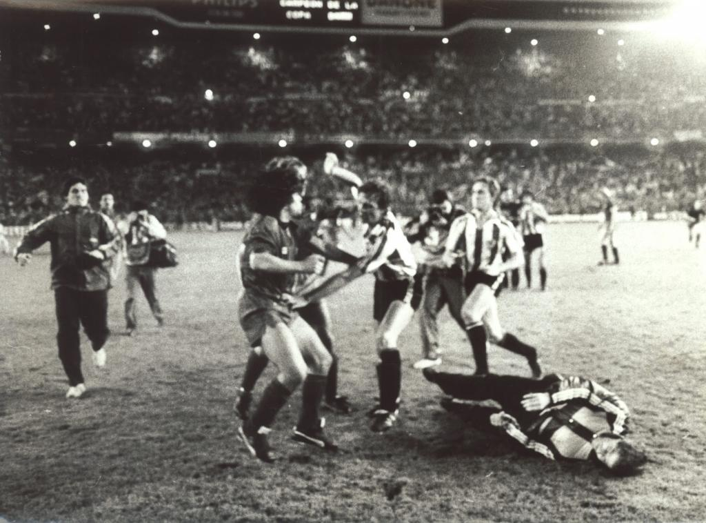

Diego Armando Maradona was born on 30 October 1960, at the Policlínico (Polyclinic) Evita Hospital in Lanús, Buenos Aires Province to a poor family that had moved from Corrientes Province; he was raised in Villa Fiorito, a shantytown on the southern outskirts of Buenos Aires, Argentina. He was the first son after four daughters. He has two younger brothers, Hugo (el Turco) and Raúl (Lalo), both of whom were also professional football players. His father Diego Maradona "Chitoro" (1927–2015), who worked at a chemicals factory, was of Guaraní (Indigenous) and Spanish (Basque) descent, and his mother Dalma Salvadora Franco, "Doña Tota" (1930–2011), was of Italian descent.
On 20 October 1976, Maradona made his professional debut for Argentinos Juniors, 10 days before his 16th birthday, vs. Talleres de Córdoba. He entered to the pitch wearing the number 16 jersey, and became the youngest player in the history of the Argentine Primera División. A few minutes after debuting, Maradona kicked the ball through Juan Domingo Cabrera's legs, making a nutmeg that would become legendary. After the game, Maradona said, "That day I felt I had held the sky in my hands."Thirty years later, Cabrera remembered Maradona's debut: "I was on the right side of the field and went to press him, but he didn't give me a chance. He made the nutmeg and when I turned around, he was far away from me". Maradona scored his first goal in the Primera División against Marplatense team San Lorenzo on 14 November 1976, two weeks after turning 16.
Maradona spent five years at Argentinos Juniors, from 1976 to 1981, scoring 115 goals in 167 appearances before his US$ 4 million transfer to Boca Juniors. Maradona received offers to join other clubs, including River Plate who offered to make him the club's best paid player. However, River decided to drop its bid due to its large payroll in keeping Daniel Passarella and Ubaldo Fillol. Maradona signed a contract with Boca Juniors on 20 February 1981. He made his debut two days later against Talleres de Córdoba, scoring twice in the club's 4–1 win. On 10 April, Maradona played his first Superclásico against River Plate at La Bombonera stadium. Boca defeated River 3–0 with Maradona scoring a goal after dribbling past Alberto Tarantini and Fillol.[29] Despite the distrustful relationship between Maradona and Boca Juniors manager, Silvio Marzolini,[30] Boca had a successful season, winning the league title after securing a point against Racing Club. That would be the only title won by Maradona in the Argentine domestic league.
After the 1982 World Cup, in June, Maradona was transferred to Barcelona in Spain for a then world record fee of £5 million ($7.6 million). In 1983, under coach César Luis Menotti, Barcelona and Maradona won the Copa del Rey (Spain's annual national cup competition), beating Real Madrid, and the Spanish Super Cup, beating Athletic Bilbao. On 26 June 1983, Barcelona won away to Real Madrid in one of the world's biggest club games, El Clásico, a match where Maradona scored and became the first Barcelona player to be applauded by arch-rival Real Madrid fans. Maradona dribbled past Madrid goalkeeper Agustín, and as he approached the empty goal, he stopped just as Madrid defender Juan José came sliding in an attempt to block the shot. José ended up crashing into the post, before Maradona slotted the ball into the net. With the manner in which the goal was scored resulting in applause from opposition fans, only Ronaldinho (in November 2005) and Andrés Iniesta (in November 2015) have since been granted such an ovation as Barcelona players from Madrid fans at the Santiago Bernabéu.
Due to illness and injury as well as controversial incidents on the field, Maradona had a difficult tenure in Barcelona.[38] First a bout of hepatitis, then a broken ankle in a La Liga game at the Camp Nou in September 1983 caused by a reckless tackle by Athletic Bilbao's Andoni Goikoetxea—nicknamed "the Butcher of Bilbao"—threatened to jeopardize Maradona's career, but with treatment and rehabilitation, it was possible for him to return to the pitch after a three-month recovery period.
Maradona was directly involved in a violent and chaotic fight at the 1984 Copa del Rey Final at the Santiago Bernabéu stadium in Madrid against Athletic Bilbao. After receiving another hard tackle by Goikoetxea, as well as being taunted with racist insults related to his father's Native American ancestry throughout the match by Bilbao fans, and being provoked by Bilbao's Miguel Sola at full time after Barcelona lost 1–0, Maradona snapped. He aggressively got up, stood inches from Sola's face and the two exchanged words. This started a chain reaction of emotional reactions from both teams. Using expletives, Sola mimicked a gesture from the crowd towards Maradona by using a xenophobic term. Maradona then headbutted Sola, elbowed another Bilbao player in the face and kneed another player in the head, knocking him out cold.[40] The Bilbao squad surrounded Maradona to exact some retribution, with Goikoetxea connecting with a high kick to his chest, before the rest of the Barcelona squad joined in to help Maradona. From this point, Barcelona and Bilbao players brawled on the field with Maradona in the centre of the action, kicking and punching anyone in a Bilbao shirt.
The mass brawl was played out in front of the Spanish King Juan Carlos and an audience of 100,000 fans inside the stadium, and more than half of Spain watching on television. After fans began throwing solid objects on the field at the players, coaches and even photographers, sixty people were injured, with the incident effectively sealing Maradona's transfer out of the club in what was his last game in a Barcelona shirt. One Barcelona executive stated, "When I saw those scenes of Maradona fighting and the chaos that followed I realized we couldn't go any further with him." Maradona got into frequent disputes with FC Barcelona executives, particularly club president Josep Lluís Núñez, culminating with a demand to be transferred out of Camp Nou in 1984. During his two injury-hit seasons at Barcelona, Maradona scored 38 goals in 58 games. Maradona transferred to Napoli in Italy's Serie A for another world record fee, £6.9 million ($10.48 million).
Maradona arrived in Naples and was presented to the world media as a Napoli player on 5 July 1984, where he was welcomed by 75,000 fans at his presentation at the Stadio San Paolo. Sports writer David Goldblatt commented, "They [the fans] were convinced that the saviour had arrived." A local newspaper stated that despite the lack of a "mayor, houses, schools, buses, employment and sanitation, none of this matters because we have Maradona".[45] Prior to Maradona's arrival, Italian football was dominated by teams from the north and centre of the country, such as A.C. Milan, Juventus, Inter Milan, and Roma, and no team in the south of the Italian Peninsula had ever won a league title. This was perhaps the perfect scenario for the Maradona and his working-class-sympathetic image, as he joined a once-great team that was facing relegation at the end of the 1983–84 Serie A season, in what was the toughest and most highly regarded football league in Europe. At Napoli, Maradona reached the peak of his professional career: he soon inherited the captain's armband from Napoli veteran defender Giuseppe Bruscolotti and quickly became an adored star among the club's fans; in his time there he elevated the team to the most successful era in its history.[45] Maradona played for Napoli at a period when north–south tensions in Italy were at a peak due to a variety of issues, notably the economic differences between the two.[45] Led by Maradona, Napoli won their first ever Serie A Italian Championship in 1986–87.
Although Maradona was successful on the field during his time in Italy, his personal problems increased. His cocaine use continued, and he received US$70,000 in fines from his club for missing games and practices, ostensibly because of "stress". He faced a scandal there regarding an illegitimate son, and he was also the object of some suspicion over an alleged friendship with the Camorra crime syndicate. He also faced intense backlash and harassment from some local fans after the 1990 World Cup, in which he and Argentina beat Italy in a semi-final match at the San Paolo stadium. In 2000, the number 10 jersey of Napoli was officially retired. On 4 December 2020, nine days after Maradona's death, Napoli's home stadium was renamedwam Stadio Diego Armando Maradona.
During his time with the Argentina national team , Maradona scored 34 goals in 91 appearances. He made his full international debut at age 16, against Hungary, on 27 February 1977. Maradona was left off the Argentine squad for the 1978 World Cup on home soil by coach César Luis Menotti who felt he was too young at age 17. At age 18, Maradona played the 1979 FIFA World Youth Championship in Japan and emerged as the star of the tournament, shining in Argentina's 3–1 final win over the Soviet Union, scoring a total of six goals in six appearances in the tournament. On 2 June 1979, Maradona scored his first senior international goal in a 3–1 win against Scotland at Hampden Park. He went on to play for Argentina in two 1979 Copa América ties during August 1979, a 2–1 loss against Brazil and a 3–0 win over Bolivia in which he scored his side's third goal. Speaking thirty years later on the impact of Maradona's performances in 1979, FIFA President Sepp Blatter stated, "Everyone has an opinion on Diego Armando Maradona, and that’s been the case since his playing days. My most vivid recollection is of this incredibly gifted kid at the second FIFA U-20 World Cup in Japan in 1979. He left everyone open-mouthed every time he got on the ball." Maradona and his compatriot Lionel Messi are the only players to win the Golden Ball at both the FIFA U-20 World Cup and FIFA World Cup. Maradona did so in 1979 and 1986, which Messi emulated in 2005 and 2014.